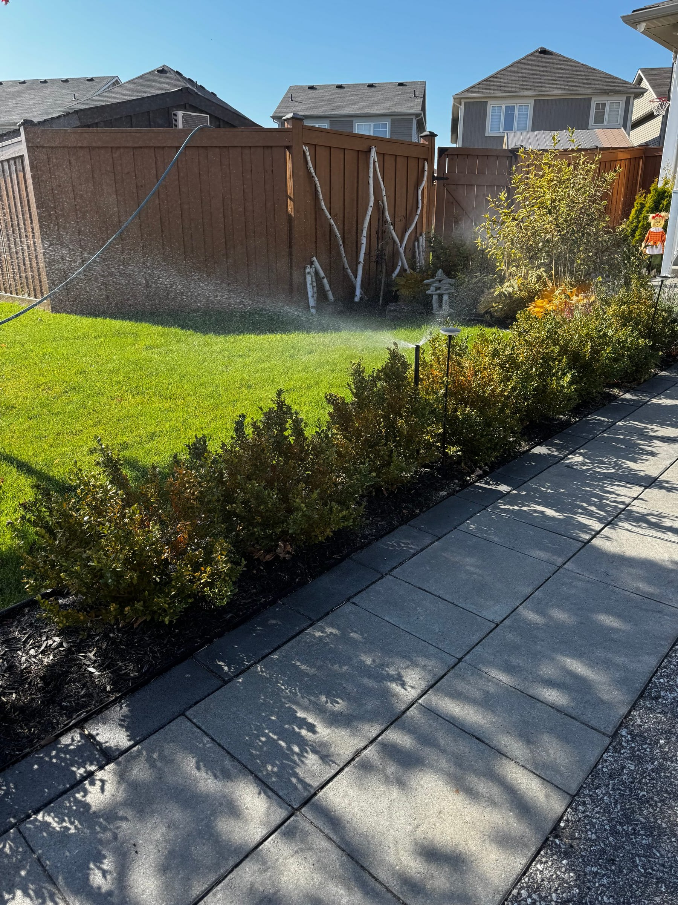

Every September the same question lands in our inbox: "When should I turn my sprinklers off?" People want a date. The honest answer is a window — and where you sit in York Region or the GTA moves it by a couple of weeks. Here's how we decide, and what to do until your closing is booked.
When should you turn off sprinklers in Ontario?
Shut down and winterize between mid-September and mid-October — before the first hard frost, not after. In Newmarket, Aurora and King City that frost typically lands between September 28 and October 10. Toronto proper runs a week or two later. Don't gamble on the late end.
The reason it's a window and not a date is that the risk isn't "fall arrived." The risk is water sitting in your system on the first night the temperature drops well below zero and stays there for a few hours. That night is unpredictable to the week, so the sensible move is to close the system in the stretch of good weather before it — while contractors still have open slots.
Two things push the window earlier than most homeowners expect:
- The lawn doesn't need much water by late September. Cooler nights and shorter days cut demand sharply. You lose very little by shutting down a couple of weeks before the first frost.
- Capacity, not climate, is the real deadline. Every irrigation company in the region is closing systems in the same six-week stretch. After mid-October the good dates are gone and you're waiting on a callback while the forecast turns.
What actually freezes first on a sprinkler system?
The above-ground and shallow parts: the backflow preventer, the manifold and valves, and the sprinkler heads. Buried poly lines are the last to freeze. A single light frost won't crack a buried pipe, but it can split a valve body or a backflow assembly sitting full of water.
This is why a hard frost matters more than a light one. Frost on the grass at 6 a.m. that's gone by 8 is not the event. A night that drops to −4°C or colder for several hours is. Water expands roughly nine percent when it freezes, and the plastic components closest to the surface have nowhere to send that pressure.
It's also why "I'll just turn the controller off" isn't a plan. A system that's off but still charged with water is in exactly the same position as one that's running — see turning off vs winterizing below.
When do sprinklers get shut off across York Region and the GTA?
Northern York Region (Newmarket, Aurora, King City, East Gwillimbury) closes first — most systems between September 20 and October 10. Stouffville, Richmond Hill and Vaughan run a few days later. Toronto and the lakeshore have the latest frost and can safely close into the third week of October.
A rough guide by area:
| Area | Typical first hard frost | Sensible closing window |
|---|---|---|
| Newmarket, Aurora, King City, East Gwillimbury | Late Sept – early Oct | Sept 20 – Oct 10 |
| Stouffville, Richmond Hill, Vaughan, Markham | Early – mid Oct | Sept 25 – Oct 15 |
| Bolton, Caledon (higher, more exposed) | Late Sept – early Oct | Sept 20 – Oct 10 |
| Toronto, North York, lakeshore | Mid – late Oct | Oct 1 – Oct 20 |
These are patterns from years of closing systems across the region, not a forecast. Some Octobers stay mild to the 20th; some don't. The table tells you when to book, not when to relax.
Elevation and exposure matter as much as latitude. A property on open ground north of Davis Drive will see frost before a sheltered lot in Thornhill, even on the same night.
Should you keep watering until the closing?
Yes. Keep your normal schedule running until the day of your closing, then let the blow-out finish the job. Fall root growth still needs moisture, and there's no benefit to a dry September. A smart controller will shorten run times automatically as the weather cools.
Grass roots keep growing well into fall, and many homeowners overseed or top-dress in September. Cutting the water early doesn't protect the system — it just makes the lawn go into winter drier than it should. If you're on a Hydrawise controller you'll notice the run times shrinking on their own; that's the weather adjustment doing its job.
One caveat: if a hard frost is forecast and your closing is still days away, turn the controller off so the system doesn't run overnight and leave water spraying onto frozen ground. That's a temporary hold, not a winterization.
What's the difference between turning off sprinklers and winterizing them?
Turning off stops the controller. Winterizing removes the water. A system that's turned off but still full of water will freeze exactly the same way. The only thing that protects it is getting the water out of the lines, valves and heads — which means a compressor blow-out.
This distinction causes more spring repair calls than anything else we see. Someone shuts the controller off in October, assumes the system is "closed," and calls us in April with a cracked manifold. Shutting the water off at the main is the first step of winterizing, not the whole thing.
What a proper closing involves — main shut-off, drain-down, zone-by-zone compressor blow-out, controller into winter mode — is laid out on our fall winterization service page. If you'd rather know what you need to do on your end before we show up, read how to prepare for your fall closing.
What if you missed the first frost?
One or two light frosts rarely cause damage — book a closing immediately and turn the controller off in the meantime. If the system has already sat through a hard freeze, still get it blown out; it stops further damage and lets us flag anything that cracked so spring isn't a surprise.
If you're reading this in late October with a frost already behind you, don't write the season off. Buried poly lines are more forgiving than people assume, and a system closed a week late usually comes through fine. The system that gets hurt is the one nobody closes at all.
We close systems into November when the weather allows. The later it gets, the tighter the schedule — so call rather than book online if you're past mid-October.
Frequently asked questions
Is October too late to winterize sprinklers in Ontario?
Early October is the normal window across York Region and the GTA. Mid-to-late October is late but usually fine if no hard freeze has hit yet. The bigger risk in late October is availability, not frost.
Can I just turn my sprinkler controller off for the winter?
No. Turning the controller off stops watering but leaves the lines, valves and backflow preventer full of water. That water is what freezes and cracks components. The system needs to be drained and blown out.
Does a light frost damage sprinkler systems?
Rarely. A brief frost that's gone by morning doesn't freeze buried lines. The concern is a hard freeze — several hours well below zero — which can crack the above-ground and shallow components first.
Should I stop watering in September?
Not unless your closing is booked for that week. Fall root growth needs water and the cooler weather already cuts demand. Keep the schedule running, or let a smart controller shorten it, until the day of the blow-out.
When should I book a fall closing?
Book in early September for the best dates. Most closings in York Region happen between September 20 and October 10, and slots fill faster than spring because the window is shorter. Flat-rate pricing starts at $90 for up to four zones.
Ready to close for the season?
Pick your date on our fall winterization page — flat-rate from $90 for up to four zones, priced by zone count, no on-site quote. Book the spring opening at the same time and the same crew that closed your system is the one that opens it.
Book a fall closing